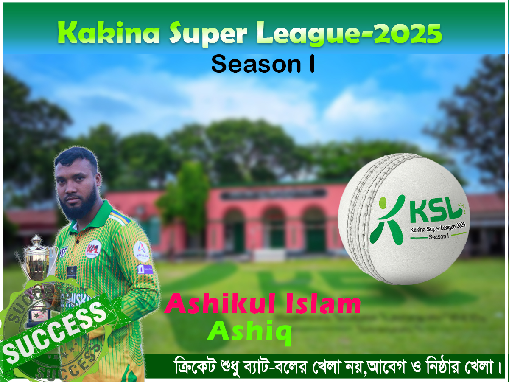

আশিকুর ইসলাম
বাংলাদেশের সেরা অলরাউন্ডার
মুশফিকুর রহিম
বাংলাদেশের সেরা উইকেট-কিপার ব্যাটসম্যান
তামিম ইকবাল
সেরা ওপেনিং ব্যাটসম্যান
বিশ্বকাপ ২০১৫
ইংল্যান্ডকে হারিয়ে কোয়ার্টার ফাইনালে
অস্ট্রেলিয়ার বিপক্ষে টেস্ট জয়
২০১৭ সালে ঐতিহাসিক জয়
টি-টোয়েন্টি বিশ্বকাপ ২০২১
দক্ষিণ আফ্রিকাকে হারানো
এশিয়া কাপ ২০১৮
ফাইনালে উত্তরণ